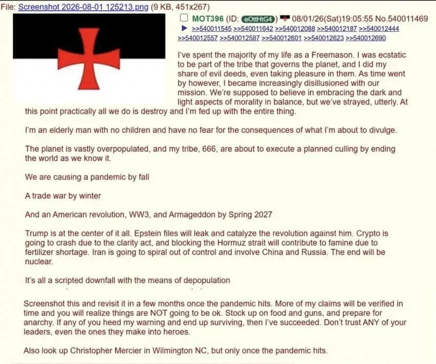
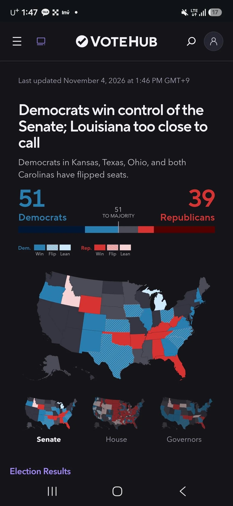
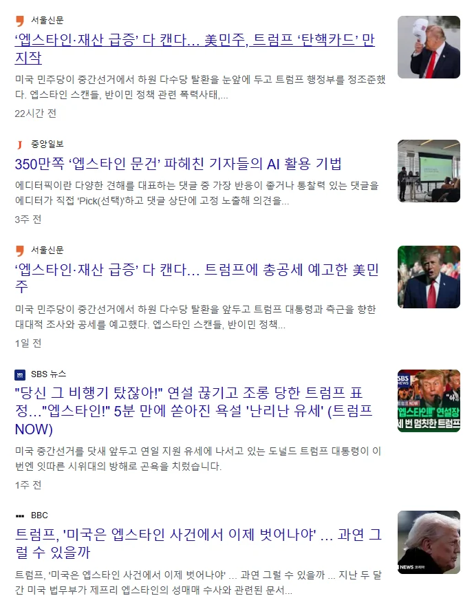

나는 인생의 대부분을 프리메이슨으로 살아왔다.
나는 지구를 지배하는 부족의 일원이 된 것을 매우 기쁘게 생각했고,
악행에도 내 몫을 다했으며 심지어 그런 행위에서 쾌락을 느끼기도 했다.
하지만 시간이 지나면서 우리의 사명에 점점 환멸을 느끼게 되었다.
우리는 도덕의 어두운 면과 밝은 면을 모두 받아들여 균형을 이루어야 한다고 배웠지만, 우리는 완전히 그 길에서 벗어났다.
이제 우리가 하는 일은 사실상 파괴뿐이며, 나는 이 모든 것에 진절머리가 났다.
나는 자녀가 없는 노인이며, 이제 내가 폭로하려는 일의 결과를 두려워할 이유도 없다.
지구는 심각하게 과잉 인구 상태이며, 나의 부족 666은 우리가 알고 있는 세상을 끝내기 위해 계획된 **대규모 인구 감축(culling)**을 곧 실행하려 한다.
우리는 가을까지 팬데믹을 일으키고,
겨울까지 무역전쟁을 일으키며,
2027년 봄까지 미국의 혁명, 제3차 세계대전(WW3), 그리고 아마겟돈을 일으킬 것이다.
트럼프가 이 모든 사건의 중심에 있다.
엡스타인 파일이 유출되고 그것이 트럼프에 대한 혁명을 촉발할 것이다.


암호화폐는 CLARITY Act 때문에 폭락할 것이고, 호르무즈 해협 봉쇄는 비료 부족으로 인한 기근을 초래하는 데 기여할 것이다.
이란은 통제 불능 상태로 빠져들 것이며 중국과 러시아가 개입하게 될 것이다. 결말은 핵전쟁이 될 것이다.
이 모든 것은 인구 감소를 목적으로 계획된 각본에 따른 몰락이다.
이 글을 스크린샷으로 찍어두었다가 팬데믹이 발생하고 몇 달이 지난 후 다시 확인해 보라.
시간이 지나면 내가 한 주장 중 더 많은 것들이 사실로 확인될 것이며,
그때 너희는 상황이 절대로 괜찮아지지 않을 것이라는 사실을 깨닫게 될 것이다.
식량과 총기를 비축하고 무정부 상태에 대비하라.
만약 너희 중 누군가가 내 경고를 받아들여 살아남는다면, 나는 내 목적을 달성한 것이다.
너희 지도자를 절대로 믿지 마라. 그들이 영웅으로 만들어 놓은 사람들조차도.
그리고 노스캐롤라이나주 윌밍턴의 Christopher Mercier라는 사람도 찾아봐라.
단, 팬데믹이 발생한 후에만 찾아봐라.
병신 틀니새끼 미정갤에서왔나